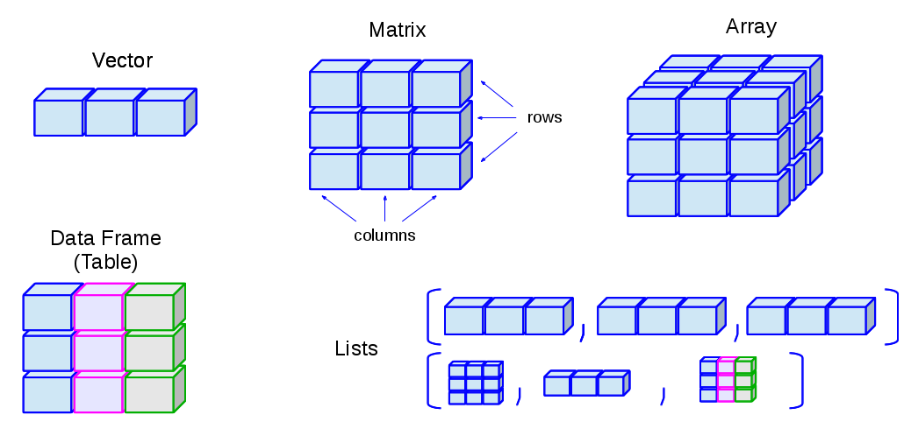
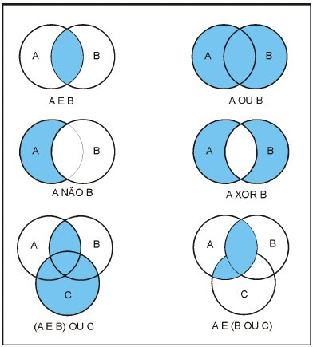
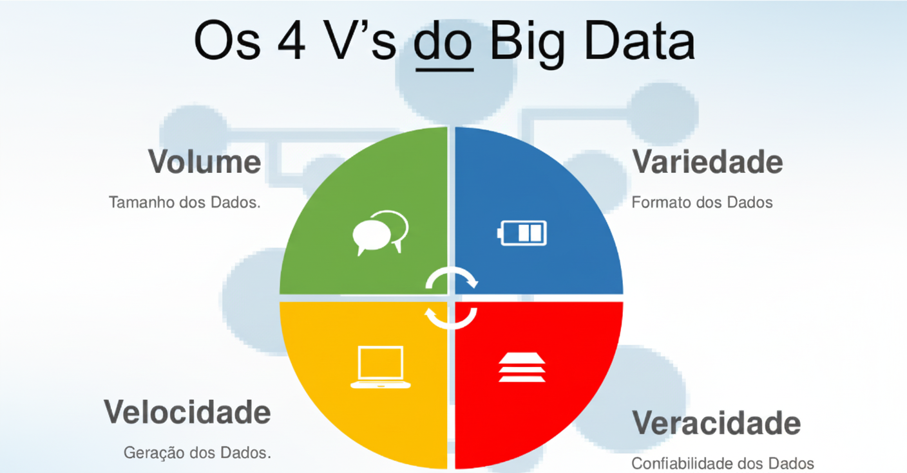
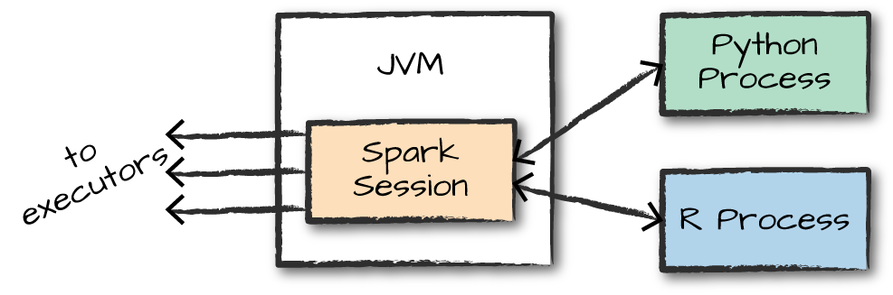
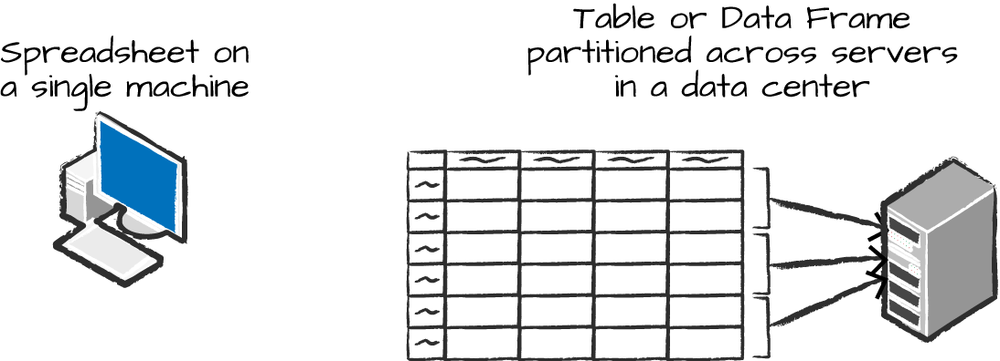
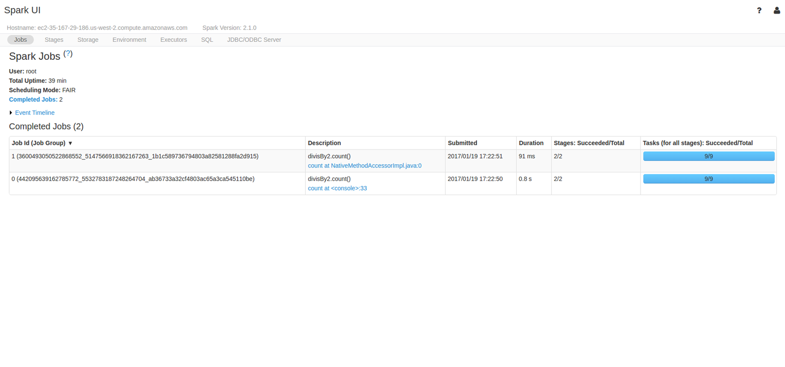

Explorando R e Python com Spark no contexto da Estatística
Dia 01 - 27.10.2025
UFPE
Estrutura do Minicurso
=> Dia 01 - 27.01.2025:
- Introdução ao R;
- Introdução ao python;
- O que é Spark e instalação do Spark com Google Colab;
=> Dia 02 - 28.01.2025:
- Análise Exploratória de Dados com PySpark;
- Análise Exploratória de Dados com Sparklyr;
- Aplicando FPGroup em PySpark com criação de funções;
- Aplicando FPGroup em Sparklyr com criação de funções;
Introdução ao python
R
O R é uma linguagem de programação inicialmente desenvolvida para computação estatística. E licenciada como Software Livre.
- Atualmente, é uma linguagem de programação muito utilizada em estatística e ciência de dados, e é uma das linguagens mais populares para análise de dados.
- É uma implementação de código aberto do S, que é uma linguagem de programação estatística desenvolvida pela AT&T Bell Laboratories.
- As vantagens do R para programação estatística são a facilidade de uso, a capacidade de criar gráficos de alta qualidade e a comunidade de usuários ativos.
Linguagem R
Para obter o R, acesse o link: https://cloud.r-project.org/
O CRAN (Comprehensive R Archive Network) é um conjunto de servidores-espelho distribuídos pelo mundo e é utilizado para distribuir o R e os pacotes do R.
Uma nova grande versão do R é lançada uma vez por ano, e há dois ou três pequenos lançamentos por ano.
É interessante manter o R sempre atualizado, pois as novas versões do R trazem melhorias de desempenho em relação aos hardware mais recentes, novas funcionalidades e correções de bugs. tware para o R.
No momento que essa aula foi criada, o R encontrava-se na versão 4.5.1.
Pacotes
- Para carregar um pacote no R, utilizamos uma das seguintes funções:
ou
e as funções do pacote podem ser usadas de duas formas:
Pacotes
ou
# Exemplo de utilização de função de pacote
datasets::iris |>
dplyr::filter(Species == "setosa") |>
utils::head() Sepal.Length Sepal.Width Petal.Length Petal.Width Species
1 5.1 3.5 1.4 0.2 setosa
2 4.9 3.0 1.4 0.2 setosa
3 4.7 3.2 1.3 0.2 setosa
4 4.6 3.1 1.5 0.2 setosa
5 5.0 3.6 1.4 0.2 setosa
6 5.4 3.9 1.7 0.4 setosavou colocar aqui abaixo novamente…
Operações Básicas
- O R é uma linguagem de programação que suporta operações aritméticas básicas, como adição, subtração, multiplicação e divisão.
Criação de Objetos
- No R, é possível criar objetos para armazenar valores, e esses objetos podem ser de diferentes tipos, como números, strings, vetores, matrizes, data frames, entre outros.
Utilização de Funções
- O R possui uma série de funções embutidas que podem ser utilizadas para realizar operações matemáticas, estatísticas, de manipulação de dados, entre outras, estas função são utilizadas da seguinte forma:
vetores, arrays, listas e matrizes
- No R, é possível criar vetores, arrays e listas, que são estruturas de dados que podem armazenar múltiplos valores.
- Um vetor é uma sequência de valores de um único tipo, e é criado utilizando a função
c().
vetores, arrays, listas e matrizes
- Uma lista é uma estrutura de dados que pode armazenar múltiplos valores de diferentes tipos, e é criado utilizando a função
list().
[[1]]
[1] 1
[[2]]
[1] "a"
[[3]]
[1] TRUEvetores, arrays, listas e matrizes
- Para acessar os elementos de estruturas como um vetor, array, lista ou matriz, utilizamos colchetes
[].
Vale uma observação, de que os índices em R começam em 1, e não em 0, como em algumas outras linguagens de programação.
vetores, arrays, listas e matrizes

Fonte: https://www.linkedin.com/pulse/trabalhando-com-objetos-r-vetores-matrizes-data-frames-luz-lopes/
Manipulação de dados com dplyr
- O pacote
dplyré um pacote do R que fornece uma gramática para manipulação de dados, e é muito útil para transformar, filtrar e resumir dados.
- O
dplyrfornece um conjunto de funções que são fáceis de usar e que permitem realizar operações comuns de manipulação de dados de forma eficiente, dessa forma, para essa parte inicial de tratamento de dados, vamos focar na utilização desse pacote.
- Vamos tentar sempre utilizar as funções da seguinte forma
pacote::funcao()para evitar conflitos de funções com o mesmo nome em diferentes pacotes.
Manipulação de dados com dplyr
- Vamos selecionar uma base de dados para utilizar as funções do
dplyr:
# A tibble: 13 × 19
year month day dep_time sched_dep_time dep_delay arr_time sched_arr_time
<int> <int> <int> <int> <int> <dbl> <int> <int>
1 2013 1 1 517 515 2 830 819
2 2013 1 1 533 529 4 850 830
3 2013 1 1 542 540 2 923 850
4 2013 1 1 544 545 -1 1004 1022
5 2013 1 1 554 600 -6 812 837
6 2013 1 1 554 558 -4 740 728
7 2013 1 1 555 600 -5 913 854
8 2013 1 1 557 600 -3 709 723
9 2013 1 1 557 600 -3 838 846
10 2013 1 1 558 600 -2 753 745
11 2013 1 1 558 600 -2 849 851
12 2013 1 1 558 600 -2 853 856
13 2013 1 1 558 600 -2 924 917
# ℹ 11 more variables: arr_delay <dbl>, carrier <chr>, flight <int>,
# tailnum <chr>, origin <chr>, dest <chr>, air_time <dbl>, distance <dbl>,
# hour <dbl>, minute <dbl>, time_hour <dttm>Manipulação de dados com dplyr
Conseguimos fazer filtragem de dados utilizando a função filter()
# A tibble: 13 × 19
year month day dep_time sched_dep_time dep_delay arr_time sched_arr_time
<int> <int> <int> <int> <int> <dbl> <int> <int>
1 2013 11 1 5 2359 6 352 345
2 2013 11 1 35 2250 105 123 2356
3 2013 11 1 455 500 -5 641 651
4 2013 11 1 539 545 -6 856 827
5 2013 11 1 542 545 -3 831 855
6 2013 11 1 549 600 -11 912 923
7 2013 11 1 550 600 -10 705 659
8 2013 11 1 554 600 -6 659 701
9 2013 11 1 554 600 -6 826 827
10 2013 11 1 554 600 -6 749 751
11 2013 11 1 555 600 -5 847 854
12 2013 11 1 555 600 -5 839 846
13 2013 11 1 555 600 -5 929 943
# ℹ 11 more variables: arr_delay <dbl>, carrier <chr>, flight <int>,
# tailnum <chr>, origin <chr>, dest <chr>, air_time <dbl>, distance <dbl>,
# hour <dbl>, minute <dbl>, time_hour <dttm>Manipulação de dados com dplyr
Para usar filtragens de forma eficaz, você precisa saber como utilizar operadores de comparação e operadores lógicos.
Alguns operadores são:
- Operadores de comparação:
==igual a!=diferente de>maior que<menor que

- Operadores lógicos:
&e|ou!não
Manipulação de dados com dplyr
- Neste caso, podemos utilizar
# A tibble: 5 × 19
year month day dep_time sched_dep_time dep_delay arr_time sched_arr_time
<int> <int> <int> <int> <int> <dbl> <int> <int>
1 2013 11 1 5 2359 6 352 345
2 2013 11 1 35 2250 105 123 2356
3 2013 11 1 455 500 -5 641 651
4 2013 11 1 539 545 -6 856 827
5 2013 11 1 542 545 -3 831 855
# ℹ 11 more variables: arr_delay <dbl>, carrier <chr>, flight <int>,
# tailnum <chr>, origin <chr>, dest <chr>, air_time <dbl>, distance <dbl>,
# hour <dbl>, minute <dbl>, time_hour <dttm># A tibble: 5 × 19
year month day dep_time sched_dep_time dep_delay arr_time sched_arr_time
<int> <int> <int> <int> <int> <dbl> <int> <int>
1 2013 11 1 5 2359 6 352 345
2 2013 11 1 35 2250 105 123 2356
3 2013 11 1 455 500 -5 641 651
4 2013 11 1 539 545 -6 856 827
5 2013 11 1 542 545 -3 831 855
# ℹ 11 more variables: arr_delay <dbl>, carrier <chr>, flight <int>,
# tailnum <chr>, origin <chr>, dest <chr>, air_time <dbl>, distance <dbl>,
# hour <dbl>, minute <dbl>, time_hour <dttm>Manipulação de dados com dplyr
- Um problema que pode surgir para complicar as comparações, são os valores faltantes.
- Os NAs (“not available”, em português, “não disponível”) são valores que não existem na base de dados.
- Qualquer operação envolvendo um valor desconhecido, também será desconhecida.
Manipulação de dados com dplyr
- A função
filter()só considera as linhas em que a condição é verdadeira (TRUE), e descarta as linhas em que a condição é falsa (FALSE) ouNA. Se deseja preservar os valores faltantes, peça eles explicitamente:
# A tibble: 10 × 19
year month day dep_time sched_dep_time dep_delay arr_time sched_arr_time
<int> <int> <int> <int> <int> <dbl> <int> <int>
1 2013 1 1 NA 1630 NA NA 1815
2 2013 1 1 NA 1935 NA NA 2240
3 2013 1 1 NA 1500 NA NA 1825
4 2013 1 1 NA 600 NA NA 901
5 2013 1 2 NA 1540 NA NA 1747
6 2013 1 2 NA 1620 NA NA 1746
7 2013 1 2 NA 1355 NA NA 1459
8 2013 1 2 NA 1420 NA NA 1644
9 2013 1 2 NA 1321 NA NA 1536
10 2013 1 2 NA 1545 NA NA 1910
# ℹ 11 more variables: arr_delay <dbl>, carrier <chr>, flight <int>,
# tailnum <chr>, origin <chr>, dest <chr>, air_time <dbl>, distance <dbl>,
# hour <dbl>, minute <dbl>, time_hour <dttm>Manipulação de dados com dplyr
- A função
select()é utilizada para selecionar colunas de um data frame.
Manipulação de dados com dplyr
- É possível excluir colunas também utilizando o
select().
# A tibble: 15 × 16
dep_time sched_dep_time dep_delay arr_time sched_arr_time arr_delay carrier
<int> <int> <dbl> <int> <int> <dbl> <chr>
1 517 515 2 830 819 11 UA
2 533 529 4 850 830 20 UA
3 542 540 2 923 850 33 AA
4 544 545 -1 1004 1022 -18 B6
5 554 600 -6 812 837 -25 DL
6 554 558 -4 740 728 12 UA
7 555 600 -5 913 854 19 B6
8 557 600 -3 709 723 -14 EV
9 557 600 -3 838 846 -8 B6
10 558 600 -2 753 745 8 AA
11 558 600 -2 849 851 -2 B6
12 558 600 -2 853 856 -3 B6
13 558 600 -2 924 917 7 UA
14 558 600 -2 923 937 -14 UA
15 559 600 -1 941 910 31 AA
# ℹ 9 more variables: flight <int>, tailnum <chr>, origin <chr>, dest <chr>,
# air_time <dbl>, distance <dbl>, hour <dbl>, minute <dbl>, time_hour <dttm>Manipulação de dados com dplyr
- Existe também a função
summarise(), que é utilizada para resumir os dados. - A função
summarise()é muito útil para resumir os dados e obter estatísticas descritivas.
# A tibble: 1 × 2
mean_distance mean_air_time
<dbl> <dbl>
1 1040. NA- Observe que para a variável
air_timeo resultado foiNA, isso ocorreu porque a funçãomean()não sabe o que fazer com valores faltantes. Nesse caso, devemos passar como argumento para remover os valores faltantes.
Manipulação de dados com dplyr
- A função
group_by()é utilizada para agrupar os dados por uma ou mais variáveis.
dados |>
dplyr::group_by(month) |>
dplyr::summarise(mean_distance = mean(distance),
mean_air_time = mean(air_time, na.rm = TRUE)) # A tibble: 12 × 3
month mean_distance mean_air_time
<int> <dbl> <dbl>
1 1 1007. 154.
2 2 1001. 151.
3 3 1012. 149.
4 4 1039. 153.
5 5 1041. 146.
6 6 1057. 150.
7 7 1059. 147.
8 8 1062. 148.
9 9 1041. 143.
10 10 1039. 149.
11 11 1050. 155.
12 12 1065. 163.Manipulação de dados com dplyr
- Contagens também é uma operação muito comum, e para isso, utilizamos a função
n().
Introdução ao python
Módulos ou bibliotecas
- As instalações de bibliotecas em python são realizadas utilizando o comando pip, ou seja, utilizamos o comando
pip install nome_da_biblioteca.
Por exemplo, para instalar a biblioteca pandas, utilizamos o comando:
E podemos verificar se a instalação foi bem sucessida, utilizando:
Name: pandas
Version: 2.1.4
Summary: Powerful data structures for data analysis, time series, and statistics
Home-page: https://pandas.pydata.org
Author:
Author-email: The Pandas Development Team <pandas-dev@python.org>
License: BSD 3-Clause License
Copyright (c) 2008-2011, AQR Capital Management, LLC, Lambda Foundry, Inc. and PyData Development Team
All rights reserved.
Copyright (c) 2011-2023, Open source contributors.
Redistribution and use in source and binary forms, with or without
modification, are permitted provided that the following conditions are met:
* Redistributions of source code must retain the above copyright notice, this
list of conditions and the following disclaimer.
* Redistributions in binary form must reproduce the above copyright notice,
this list of conditions and the following disclaimer in the documentation
and/or other materials provided with the distribution.
* Neither the name of the copyright holder nor the names of its
contributors may be used to endorse or promote products derived from
this software without specific prior written permission.
THIS SOFTWARE IS PROVIDED BY THE COPYRIGHT HOLDERS AND CONTRIBUTORS "AS IS"
AND ANY EXPRESS OR IMPLIED WARRANTIES, INCLUDING, BUT NOT LIMITED TO, THE
IMPLIED WARRANTIES OF MERCHANTABILITY AND FITNESS FOR A PARTICULAR PURPOSE ARE
DISCLAIMED. IN NO EVENT SHALL THE COPYRIGHT HOLDER OR CONTRIBUTORS BE LIABLE
FOR ANY DIRECT, INDIRECT, INCIDENTAL, SPECIAL, EXEMPLARY, OR CONSEQUENTIAL
DAMAGES (INCLUDING, BUT NOT LIMITED TO, PROCUREMENT OF SUBSTITUTE GOODS OR
SERVICES; LOSS OF USE, DATA, OR PROFITS; OR BUSINESS INTERRUPTION) HOWEVER
CAUSED AND ON ANY THEORY OF LIABILITY, WHETHER IN CONTRACT, STRICT LIABILITY,
OR TORT (INCLUDING NEGLIGENCE OR OTHERWISE) ARISING IN ANY WAY OUT OF THE USE
OF THIS SOFTWARE, EVEN IF ADVISED OF THE POSSIBILITY OF SUCH DAMAGE.
Location: /home/jodavid/anaconda3/lib/python3.11/site-packages
Requires: numpy, python-dateutil, pytz, tzdata
Required-by: altair, category-encoders, datasets, datashader, gradio, holoviews, hvplot, mizani, panel, plotly-resampler, plotnine, pmdarima, pycaret, pymilvus, satveg-api, seaborn, sktime, statsmodels, streamlit, sweetviz, TTS, xarrayMódulos
Também conhecidos como bibliotecas, os módulos são arquivos que contém funções, variáveis e classes que podem ser utilizadas em outros programas.
Para utilizar um módulo em python, utilizamos o comando
import nome_do_modulo. Caso deseje utilizar apenas uma função específica de um módulo, utilizamos o comandofrom nome_do_modulo import nome_da_funcao.Como por exemplo, utilizando o modulo
math:
Acima o math é o módulo e sqrt é a função que calcula a raiz quadrada de um número.
Módulos
- Em python é comum utilizarmos a abreviação de um módulo, para facilitar a utilização de suas funções. Por exemplo, o módulo
pandasé comumente abreviado comopd, o módulonumpyé abreviado comonp, o módulomatplotlibé abreviado comoplt, entre outros.
Vale uma observação é que essas abreviações elas são abraçadas pela comunidade, ou seja, não é uma regra, mas existe uma boa prática de por exemplo, abreviar o pandas como pd, o numpy como np, o matplotlib como plt, e existe isso para várias outras bibliotecas.
Módulos
Também existe o caso de você explicitar as funções que desejas nos módulos, com o intuito de usar diretamente o nome da função, sem a necessidade de chamar o módulo. Por exemplo, ao invés de utilizar math.sqrt(25), você pode utilizar from math import sqrt e depois utilizar sqrt(25).
Note que a função
sqrtfoi importada diretamente do módulomath, e por isso não é necessário chamar o módulo para utilizá-la, ou seja, se a função não for utilizada como na forma acima, e utilizar oimport mathé necessário utilizar omath.sqrt(25)para obter o resultado, informando que a funçãosqrtpertence ao módulomath.
Módulos
- O python também permite que você utilize um apelido para a função importada, por exemplo, ao invés de utilizar
from math import sqrt, você pode utilizarfrom math import sqrt as raiz_quadrada, e depois utilizarraiz_quadrada(25)para obter o resultado. Isso é útil quando a função importada possui um nome muito grande, ou quando o nome da função importada é muito comum e pode gerar confusão com outras funções. Então, um exemplo para esse caso é:
Laços e Condicionais
Laços e Condicionais
- Muitas linguagens usam chaves para delimitar blocos de código, mas em Python, a indentação é usada para isso. A indentação é uma parte importante da linguagem Python e, muitas vezes, é uma fonte de erros para os programadores que estão começando a aprender a linguagem.
# Exemplo de condicional
x = 10
if x > 5:
print("x é maior que 5")
else:
print("x é menor ou igual a 5")x é maior que 5- Como é possível observar acima, o bloco de código que está dentro do
ife doelseestá indentado, ou seja, está com um espaço a mais em relação ao bloco de código que está fora doife doelse. Isso é necessário para que o python entenda que o bloco de código está dentro doife doelse.
Laços e Condicionais
Quando o laço é utilizando for e while, a indentação também é necessária para delimitar o bloco de código que está dentro do laço.
Uma observação importante, é que diferente da linguagem
Ro python inicia sua indexação em 0, ou seja, o primeiro elemento de uma lista, por exemplo, é o elemento 0, o segundo elemento é o elemento 1, e assim por diante. NoRa indexação inicia em 1.
Laços Complexos
- Em python, se você possui uma lista, é possível acessar os elementos da lista diretamente da iteração no laço
for. Isso é muito útil quando você deseja acessar o índice e o valor de um elemento da lista.
Laços Complexos
- Em python, se você possui uma lista, é possível acessar os elementos da lista diretamente da iteração no laço
for. Isso é muito útil quando você deseja acessar o índice e o valor de um elemento da lista.
Laços Complexos
- Uma forma mais complexa é utilizando a função
enumeratepara acessar o índice e o valor de um elemento da lista.
# Exemplo de laço for com acesso ao índice e ao valor
lista = [10, 20, 30, 40, 50]
for i, valor in enumerate(lista):
print(f"O elemento {i} da lista é {valor}")O elemento 0 da lista é 10
O elemento 1 da lista é 20
O elemento 2 da lista é 30
O elemento 3 da lista é 40
O elemento 4 da lista é 50- Mas vamos avançando aos poucos, e vamos ver como podemos criar funções em python.
Funções
Em python, as funções são criadas utilizando a palavra-chave def, seguida pelo nome da função, seguida por parênteses, seguida por dois pontos. O bloco de código que está dentro da função é indentado, ou seja, está com um espaço a mais em relação ao bloco de código que está fora da função.
Para chamar a função, basta utilizar o nome da função seguido por parênteses.
Como boas práticas de programação, é interessante que as funções possuam argumentos e docstring, ou seja, parâmetros que são passados para a função e dentro da função um cabeçalho indicando o que cada argumento representa, respectivamente. Isso torna a função mais flexível e mais útil.
Funções
Um exemplo de função com argumentos e docstring é:
No exemplo acima, a função saudacao possui dois argumentos, nome e saudacao, onde nome é obrigatório e saudacao é opcional, pois possui um valor padrão. Além disso, a função possui um cabeçalho que indica o que cada argumento representa.
Strings
As strings podem ser demilitadas por aspas simples ou duplas, e podem ser acessadas como listas, ou seja, é possível acessar cada caractere da string utilizando a indexação.
# Exemplo de string
single_quoted_string = 'data science'
double_quoted_string = "data science"
single_quoted_string == double_quoted_stringTrueO python usa barra invertida para codificar caracteres especiais. Por exemplo, para incluir uma aspa simples em uma string delimitada por aspas simples, você deve usar \'.
Strings
Também é possível criar strings múltiplas linhas utilizando três aspas simples ou duplas.
# Exemplo de string com múltiplas linhas
multi_line_string = """Esta é a primeira linha.
e esta é a segunda linha
e esta é a terceira linha"""
print(multi_line_string)Esta é a primeira linha.
e esta é a segunda linha
e esta é a terceira linhaO python também possui uma série de funções para manipular strings, como por exemplo, a função split que divide uma string em uma lista de substrings.
Listas
As listas são uma das estruturas de dados mais importantes do python. Elas são similares aos vetores em outras linguagens, como por exemplo na linguagem R^[No R,tipos diferentes no vetor ele converte para character, por exemplo vetor <-c("a",1,TRUE), entretanto, são mais flexíveis. Elas são mais flexíveis, pois podem armazenar qualquer tipo de dado, e não são limitadas a um único tipo de dado.
Listas
Você pode acessar ou modificar o i-ésimo elemento de uma lista utilizando colchetes.
Listas
Além disso, o python possui uma sintaxe de corte que permite acessar múltiplos elementos de uma lista.
Listas
Um operação interessante é utilizando o operator in para verificar se um elemento está contido em uma lista.
OBS.: Essa operação é muito mais lenta em listas do que em dicionários e conjuntos, pois o python faz uma busca linear em listas, ou seja, verifica os elementos da lista um de cadas vez, sendo assim a verificação em um conjunto ou dicionário é muito rápido. Vamos estudar consjuntos e dicionários mais a frente.
Com listas, também podemos concatenar, ou seja, adicionar mais informações a lista, e isso pode ser feito de várias formas, como adição de elementos a lista, junção de várias listas, ou multiplicação de listas. Abaixo segue exemplos de como fazer isso.
Listas
Listas
Tuplas
Chegamos a Tuplas, e o que seria isso? Tuplas são muito parecidas com listas, mas com uma diferença fundamental, elas são imutáveis, ou seja, uma vez que você cria uma tupla, você não pode adicionar, remover ou modificar elementos dela. Tuplas são geralmente utilizadas para funções que retornam múltiplos valores. Vamos a exemplos:
Tuplas
Um outro exemplo:
# Exemplo de tuplas
def sum_and_product(x, y):
return (x + y), (x * y)
sp = sum_and_product(2, 3)
s, p = sum_and_product(5, 10)
print(sp)(5, 6)1550As tuplas (e listas) podem ser usadas para atribuições múltiplas, o que é muito útil para trocar valores de variáveis.
Dicionários
Outra estrutura fundamental é o dicionário, que é uma coleção de pares chave-valor, onde as chaves devem ser únicas. Dicionários são como listas, mas mais gerais, pois você pode indexá-los com qualquer tipo imutável, não apenas inteiros. Vamos a exemplos:
Dicionários
Dicionários
# Exemplo de atribuição de valores
grades["Tim"] = 99
grades["Kate"] = 100
num_students = len(grades)
print(grades){'Joel': 80, 'Tim': 99, 'Kate': 100}3Dicionários são muito utilizados para contadores, ou seja, para contar a frequência de ocorrência de elementos em uma lista. Vamos a um exemplo:
Dicionários
Frequentemente usamos dicionários para representar dados “semi-estruturados”. Por exemplo, poderíamos ter um dicionário por usuário em uma rede social, onde as chaves são os nomes das colunas e os valores são os dados do usuário. Por exemplo:
# Exemplo de dicionários semi-estruturados
tweet = {
"user" : "joelgrus",
"text" : "Data Science.",
"retweet_count" : 100,
"hashtags" : ["#data", "#science", "#datascience", "#bigdata"]
}
print(tweet){'user': 'joelgrus', 'text': 'Data Science.', 'retweet_count': 100, 'hashtags': ['#data', '#science', '#datascience', '#bigdata']}Dicionários
Além de procurar por chaves específicas, podemos olhar para todas elas. Por exemplo:
# Exemplo de chaves e valores
tweet_keys = tweet.keys()
tweet_values = tweet.values()
tweet_items = tweet.items()
print(tweet_keys)dict_keys(['user', 'text', 'retweet_count', 'hashtags'])dict_values(['joelgrus', 'Data Science.', 100, ['#data', '#science', '#datascience', '#bigdata']])dict_items([('user', 'joelgrus'), ('text', 'Data Science.'), ('retweet_count', 100), ('hashtags', ['#data', '#science', '#datascience', '#bigdata'])])As chaves dos dicionários devem ser imutáveis, o que significa que podemos usar strings, números ou tuplas como chaves, mas não listas. Por exemplo:
Conjuntos
Conjuntos são uma outra estrutura de dados em Python. Um conjunto é uma coleção de elementos distintos, ou seja, não há repetição de elementos. Os conjuntos em python são similares aos conjuntos em matemática e utilizam a função set() para criá-los. Vamos a exemplos:
Conjuntos
Conjuntos são muito úteis para verificar a existência de elementos distintos em uma coleção1. Por exemplo, podemos verificar a existência de palavras distintas em um texto. Vamos a um exemplo:
Introdução ao SPARK
Big Data
- Estamos em um período de transformação no modo em que estudamos, ensinamos e, principalmente, dirigimos as nossas vidas.
- Neste exato momento, uma verdadeira enxurrada de dados são gerados por dia, i.e. aproximadamente 2.5 quintilhões de bytes1, e estes dados estão sendo utilizados para nortear indivíduos, empresas e governos, e geralmente essa quantidade é dobranda a cada dois anos.
- Toda vez que fazemos uma compra, uma ligação ou interagimos nas redes sociais, estamos produzindo esses dados.
- E com a recente conectividade em objetos, tal como relógios, carros e até geladeiras, as informações capturadas se tornam massivas e podem ser cruzadas para criar roadmaps cada vez mais elaborados, apontando e, até prevendo, o comportamento de empresas e clientes.
Big Data

Big Data
Mas afinal, qual a definição de Big Data?
Big Data pode ser entendido como uma coleção de conjuntos de dados, grandes e complexos, que não podem ser processados por bancos de dados ou aplicações de processamento tradicionais.
- O Google estima que a humanidade criou nos últimos 5 anos, o equivalente a 300 Exabytes de dados ou seja: 300.000.000.000.000.000.000 bytes de dados.
- Podemos definir o conceito de Big Data como sendo conjuntos de dados extremamente amplos e que, por este motivo, necessitam de ferramentas especialmente preparadas para lidar com grandes volumes, de forma que toda e qualquer informação nestes meios possa ser encontrada, analisada e aproveitada em tempo hábil.
Big Data
- Muitos dos dados gerados, possuem um tempo de vida curto e se não analisados, perdem a utilidade.
- Dados são transformados em informação, que precisa ser colocada em contexto para que possa fazer sentido.
- É caro integrar grandes volumes de dados não-estruturados, pois vai exigir muito poder computacional consequentemente máquinas mais poderosas e mais caras.
Big Data
Trabalhar com Big Data exige alguns desafios:
- Encontrar profissionais habilitados em Big Data.
- Compreender as plataformas e ferramentas para Big Data.
- Coletar, armazenar e analisar dados de diferentes fontes, em diferentes formatos e gerados em diferentes velocidades.
- Migrar do sistema tradicional de coleta e armazenamento de dados, para uma estrutura de Big Data.
Big Data
O Big Data são caracterizados por 4 V’s1, que são:

Big Data
Volume
- O volume refere-se à quantidade de dados que são gerados, armazenados e processados.
Velocidade
- A velocidade refere-se à rapidez com que os dados são gerados, armazenados e processados.
Variedade
- A variedade refere-se aos diferentes tipos de dados que são gerados, armazenados e processados.
Veracidade
- A veracidade refere-se à qualidade dos dados que são gerados, armazenados e processados.
Big Data
Apache Spark
Apache Spark
O Apache Spark é um framework de computação distribuída de código aberto, que fornece uma interface de programação unificada para processamento de dados em larga escala.
O Spark foi desenvolvido para ser rápido, fácil de usar e oferecer suporte a uma ampla variedade de aplicativos de processamento de dados de forma eficiente e escalável.
O Spark é amplamente utilizado em empresas de tecnologia, finanças, saúde, varejo e outras indústrias para processar grandes volumes de dados e executar análises em tempo real.
Pode ser usado com linguagens Python, R, Scala e Java e oferece suporte a bibliotecas para diversas tarefas, desde consultas SQL até processamento de streaming e aprendizado de máquina.
Apache Spark
O Apache Spark oferece basicamente 3 principais benefícios:
Facilidade de uso – é possível desenvolver API’s de alto nível em Java, Scala, Python e R, que permitem focar apenas no conteúdo a ser computado, sem se preocupar com configurações de baixo nível e extremamente técnicas.
Velocidade – Spark é veloz, permitindo uso iterativo e processamento rápido de algoritmos complexos. Velocidade é uma característica especialmente importante no processamento de grandes conjuntos de dados e pode fazer a diferença entre analisar os dados de forma interativa ou ficar aguardando vários minutos pelo fim de cada processamento. Com Spark, o processamento é feito em memória.
Uso geral – Spark permite a utilização de diferentes tipos de computação, como processamento de linguagem SQL (SQL Spark), processamento de texto, Machine Learning (MLlib) e processamento de grafos (GraphX). Estas características fazem do Spark uma excelente opção para projetos de Big Data. Além de Bibliotecas Externas (Pacotes de Terceiros) que estendem a funcionalidade do Spark, e podem ser encontradas em https://spark-packages.org/.
Apache Spark
As APIs de linguagem do Spark permitem que você escreva código Spark usando várias linguagens de programação. Os conceitos centrais do Spark são traduzidos para o código Spark que roda no cluster.
- Scala: Linguagem “nativa” do Spark, oferece a API mais direta.
- Java: Suporte completo, permitindo escrever código Spark em Java.
- Python (PySpark): API robusta que permite a manipulação de dados em larga escala.
- R (SparkR e sparklyr): Duas bibliotecas que fornecem interfaces familiares de R para o Spark.
- SQL: Suporta um subconjunto do padrão ANSI SQL 2003, permitindo que analistas executem consultas SQL diretamente.
Apache Spark
Relação entre SparkSession e APIs de Linguagem

Apache Spark
O Ponto de Entrada: SparkSession
A SparkSession é o ponto de entrada para qualquer aplicação Spark. É através dela que você controla a aplicação e suas manipulações no cluster.
- Em modos interativos (como consoles), a SparkSession é criada implicitamente.
- Em aplicações standalone, você deve criar o objeto
SparkSessionmanualmente.
Exemplo (Scala):
import org.apache.spark.sql.SparkSession
val spark = SparkSession.builder()
.appName("MeuAppSpark")
.config("spark.sql.warehouse.dir", "/user/hive/warehouse")
.getOrCreate()Exemplo (Python):
from pyspark.sql import SparkSession
spark = SparkSession.builder\
.master("local")\
.appName("ContadorDePalavras")\
.config("spark.some.config.option", "some-value")\
.getOrCreate()Apache Spark
DataFrames: Distribuído vs. Máquina Única

Apache Spark
DataFrames vs. Datasets vs. RDDs
- DataFrames: Coleções tabelares distribuídas, otimizadas internamente pelo Spark. Disponíveis em todas as linguagens (Scala, Java, Python, R). São Datasets de tipo Row.
- Datasets: Coleções distribuídas type-safe, onde você pode atribuir uma classe Java/Scala aos registros. A verificação de tipos ocorre em tempo de compilação. Disponíveis apenas em Scala e Java.
- RDDs (Resilient Distributed Datasets): Abstração de baixo nível. Coleções imutáveis e distribuídas de objetos Java, Scala ou Python. Oferecem controle máximo, mas exigem mais esforço manual e menos otimizações automáticas.
Recomendação: Priorize DataFrames/Datasets sempre que possível, pois o Spark otimiza melhor as operações com essas APIs. RDDs são para controle mais granular, especialmente para distribuição física de dados ou código legado.
Apache Spark
Avaliação Preguiçosa (Lazy Evaluation)
- A avaliação preguiçosa significa que o Spark espera até o último momento possível para executar as instruções.
- Ao invés de modificar os dados imediatamente, você constrói um plano de transformações que deseja aplicar aos seus dados de origem.
Benefícios: O Spark pode otimizar todo o fluxo de dados de ponta a ponta.
Apache Spark
Ações: Acionando a execução
- As transformações permitem construir o plano lógico de manipulação de dados. Para acionar a execução, você executa uma ação.
Uma ação instrui o Spark a computar um resultado a partir de uma série de transformações.
Exemplo mais simples:
count()- retorna o número total de registros no DataFrame.
Tipos de Ações:
Visualizar dados no console:
show(),printSchema().Coletar dados para objetos nativos:
collect(),take().Escrever dados para fontes de saída:
write.format().save().
Apache Spark
Parquet
- O Apache Parquet é um formato de arquivo de código aberto para armazenar dados em colunas.
- Ele é projetado para ser eficiente em termos de espaço e velocidade de leitura/escrita.
- O Parquet é especialmente útil para consultas analíticas em que você normalmente lê apenas algumas colunas de um grande conjunto de dados.
- O Parquet é amplamente utilizado em sistemas de Big Data, como o Apache Hadoop e o Apache Spark.
- Ele armazena grande volume de dados em disco, de forma compacta e eficiente, e permite a leitura de dados de forma rápida e eficiente.
Apache Spark
Spark UI: Monitoramento Visual
- A Spark UI é uma ferramenta gráfica incluída no Spark para monitorar o progresso dos jobs.
Acesso: Disponível na porta 4040 (http://localhost:4040 em modo local).
Informações: Exibe detalhes sobre o estado dos jobs Spark, ambiente e estado do cluster.
Utilidade: Essencial para tuning de desempenho e depuração de aplicações.
Exemplo: Visão Geral de um Job no Spark UI

Apache Spark
Spark UI: Detalhes do Job, Stages e Tasks
Um Job Spark representa um conjunto de transformações acionadas por uma ação individual.
Os Jobs são divididos em Stages (fases). O número de stages depende das operações de shuffle necessárias.
Cada Stage consiste em Tasks (tarefas). Cada tarefa corresponde a um bloco de dados e um conjunto de transformações a serem executadas por um executor.
Monitore:
Jobs Tab: Visão geral dos jobs Spark.
Stages Tab: Detalhes de cada stage e suas tarefas.
Storage Tab: Informações sobre RDDs/DataFrames em cache.
Environment Tab: Configurações e propriedades do Spark.
SQL Tab: Planos de consulta das APIs estruturadas.
Executors Tab: Informações detalhadas sobre cada executor.
Apache Spark
Vamos usar o Spark no python e R!
Análise Exploratória com SPARK + R
Apache Spark
Análise Exploratória com Spark e RPreparando o ambiente para utilizar o Sparklyr
- O Apache Spark depende de outros sistemas, portanto, antes do Spark é preciso instalar as dependências. Primeiro, deve-se instalar o java
Apache Spark
Análise Exploratória com Spark e R- Indicando o caminho do Spark instalado na máquina
Apache Spark
Análise Exploratória com Spark e R- Lendo os dados
parquetcom Spark
Apache Spark
Análise Exploratória com Spark e R- Verificando as primeiras linhas do DataFrame
#' -----------------------
#' Visualizando as primeiras linhas do DataFrame
#' -----------------------
dados |>
head(5) |>
show()# Source: SQL [?? x 26]
# Database: spark_connection
DsOrigem DsCanalVenda DsUnidadeNegocio DsTipo NrPedido DhPedido
<chr> <chr> <chr> <chr> <int> <dttm>
1 SITE SITE B2C Produto 245467291 2020-11-27 19:16:00
2 SITE APP B2C Produto 245386940 2020-11-27 17:20:00
3 SITE APP B2C Produto 244921763 2020-11-27 05:37:00
4 SITE MOBI B2C Produto 245438285 2020-11-27 18:34:00
5 SITE APP B2C Produto 245005785 2020-11-27 07:58:00
# ℹ 20 more variables: NrFilial <int>, NrLojista <int>, InMarketPlace <lgl>,
# InRetira <lgl>, VrVendaLiquida <dbl>, VrDescontoTotal <dbl>,
# VrFreteCliente <dbl>, QtItem <int>, NrItemLoja <int>, NrItemSite <int>,
# DsItemSite <chr>, NrDepartamentoSite <int>, DsDepartamentoSite <chr>,
# NrSetorSite <int>, DsSetorSite <chr>, NrFamiliaSite <int>,
# DsFamiliaSite <chr>, NrMarcaSite <int>, DsMarcaSite <chr>, DsSingleId <chr>Apache Spark
Análise Exploratória com Spark e R- Verificando as quantidades de linhas e colunas da base de dados
Apache Spark
Análise Exploratória com Spark e R- Verificando os nomes das colunas
#' -----------------------
#' Verificando os nomes das colunas
#' -----------------------
colnames(dados) [1] "DsOrigem" "DsCanalVenda" "DsUnidadeNegocio"
[4] "DsTipo" "NrPedido" "DhPedido"
[7] "NrFilial" "NrLojista" "InMarketPlace"
[10] "InRetira" "VrVendaLiquida" "VrDescontoTotal"
[13] "VrFreteCliente" "QtItem" "NrItemLoja"
[16] "NrItemSite" "DsItemSite" "NrDepartamentoSite"
[19] "DsDepartamentoSite" "NrSetorSite" "DsSetorSite"
[22] "NrFamiliaSite" "DsFamiliaSite" "NrMarcaSite"
[25] "DsMarcaSite" "DsSingleId" Apache Spark
Análise Exploratória com Spark e R- Verificando o esquema (estrutura) do DataFrame
#' -----------------------
#' Verificando o esquema (estrutura) do DataFrame
#' -----------------------
sdf_schema(dados)$DsOrigem
$DsOrigem$name
[1] "DsOrigem"
$DsOrigem$type
[1] "StringType"
$DsCanalVenda
$DsCanalVenda$name
[1] "DsCanalVenda"
$DsCanalVenda$type
[1] "StringType"
$DsUnidadeNegocio
$DsUnidadeNegocio$name
[1] "DsUnidadeNegocio"
$DsUnidadeNegocio$type
[1] "StringType"
$DsTipo
$DsTipo$name
[1] "DsTipo"
$DsTipo$type
[1] "StringType"
$NrPedido
$NrPedido$name
[1] "NrPedido"
$NrPedido$type
[1] "IntegerType"
$DhPedido
$DhPedido$name
[1] "DhPedido"
$DhPedido$type
[1] "TimestampType"
$NrFilial
$NrFilial$name
[1] "NrFilial"
$NrFilial$type
[1] "IntegerType"
$NrLojista
$NrLojista$name
[1] "NrLojista"
$NrLojista$type
[1] "IntegerType"
$InMarketPlace
$InMarketPlace$name
[1] "InMarketPlace"
$InMarketPlace$type
[1] "BooleanType"
$InRetira
$InRetira$name
[1] "InRetira"
$InRetira$type
[1] "BooleanType"
$VrVendaLiquida
$VrVendaLiquida$name
[1] "VrVendaLiquida"
$VrVendaLiquida$type
[1] "DoubleType"
$VrDescontoTotal
$VrDescontoTotal$name
[1] "VrDescontoTotal"
$VrDescontoTotal$type
[1] "DoubleType"
$VrFreteCliente
$VrFreteCliente$name
[1] "VrFreteCliente"
$VrFreteCliente$type
[1] "DoubleType"
$QtItem
$QtItem$name
[1] "QtItem"
$QtItem$type
[1] "IntegerType"
$NrItemLoja
$NrItemLoja$name
[1] "NrItemLoja"
$NrItemLoja$type
[1] "IntegerType"
$NrItemSite
$NrItemSite$name
[1] "NrItemSite"
$NrItemSite$type
[1] "IntegerType"
$DsItemSite
$DsItemSite$name
[1] "DsItemSite"
$DsItemSite$type
[1] "StringType"
$NrDepartamentoSite
$NrDepartamentoSite$name
[1] "NrDepartamentoSite"
$NrDepartamentoSite$type
[1] "IntegerType"
$DsDepartamentoSite
$DsDepartamentoSite$name
[1] "DsDepartamentoSite"
$DsDepartamentoSite$type
[1] "StringType"
$NrSetorSite
$NrSetorSite$name
[1] "NrSetorSite"
$NrSetorSite$type
[1] "IntegerType"
$DsSetorSite
$DsSetorSite$name
[1] "DsSetorSite"
$DsSetorSite$type
[1] "StringType"
$NrFamiliaSite
$NrFamiliaSite$name
[1] "NrFamiliaSite"
$NrFamiliaSite$type
[1] "IntegerType"
$DsFamiliaSite
$DsFamiliaSite$name
[1] "DsFamiliaSite"
$DsFamiliaSite$type
[1] "StringType"
$NrMarcaSite
$NrMarcaSite$name
[1] "NrMarcaSite"
$NrMarcaSite$type
[1] "IntegerType"
$DsMarcaSite
$DsMarcaSite$name
[1] "DsMarcaSite"
$DsMarcaSite$type
[1] "StringType"
$DsSingleId
$DsSingleId$name
[1] "DsSingleId"
$DsSingleId$type
[1] "StringType"Apache Spark
Análise Exploratória com Spark e R- Resumo estatístico do DataFrame
#' ------------------------------------
#' Análise Descritiva de algumas variáveis
#' -----------------
colunas_selecionadas <- c('VrVendaLiquida','VrDescontoTotal','VrFreteCliente','QtItem')
#' ------
dados |>
select(colunas_selecionadas) |>
sdf_describe()# Source: table<`sparklyr_tmp_db8598cc_f39c_4084_88ca_40fe600844fe`> [?? x 5]
# Database: spark_connection
summary VrVendaLiquida VrDescontoTotal VrFreteCliente QtItem
<chr> <chr> <chr> <chr> <chr>
1 count 338185 338185 338185 338185
2 mean 873.3852436985125 34.87990191759762 15.35626325828306 1.09994529621…
3 stddev 1127.6857097326094 130.38245321515902 36.41660380059874 0.58722695847…
4 min 0.0 0.0 -4.92 1
5 max 94950.0 5226.34 2452.89 80 Apache Spark
Análise Exploratória com Spark e R- Gerando um histograma
#' -----------------------
#' Histograma da variável VrVendaLiquida
#' -----------------------
dados |>
select(VrVendaLiquida) |>
sdf_collect() |>
ggplot(aes(x=VrVendaLiquida)) +
geom_histogram(binwidth = 50, fill="blue", color="black", alpha=0.7) +
labs(title="Histograma de VrVendaLiquida",
x="VrVendaLiquida",
y="Frequência") +
theme_minimal()Apache Spark
Análise Exploratória com Spark e R- Fazendo um agrupamento e gráfico de barras
#' ------------------------------------
#' 3.3 Fazendo um agrupamento e gráfico de barras
#' ------------------------------------
total_de_linhas <- sdf_dim(dados)[1]
#' ----------
result <-
dados |>
select(c(DsCanalVenda,VrVendaLiquida)) |>
group_by(DsCanalVenda) |>
summarise_all(
list(n = ~ n(),
mean = ~ mean(.), min = ~ min(.),
max = ~ max(.), percent = ~ n() / total_de_linhas
)
)
print(result)# Source: SQL [?? x 6]
# Database: spark_connection
DsCanalVenda n mean min max percent
<chr> <dbl> <dbl> <dbl> <dbl> <dbl>
1 FT 30338 453. 0.49 6400. 0.0897
2 MTG 4723 511. 59 2700 0.0140
3 APP 208604 861. 0 27074. 0.617
4 SITE 30172 1148. 0 48412 0.0892
5 PV 30415 1073. 0 94950 0.0899
6 MOBI 31635 941. 0 21201. 0.0935
7 TVEN 2298 1151. 0 14056. 0.00680Apache Spark
Análise Exploratória com Spark e R- Visualizando o gráfico de barras
Apache Spark
Análise Exploratória com Spark e R- Fazendo uma correlação entre variáveis
#' ------------------------------------
# Forma 1
features <- c('VrVendaLiquida','VrDescontoTotal','VrFreteCliente','QtItem') #selecionando as colunas
ml_corr(dados, columns = features, method = "pearson") #calculando a correlação# A tibble: 4 × 4
VrVendaLiquida VrDescontoTotal VrFreteCliente QtItem
<dbl> <dbl> <dbl> <dbl>
1 1 0.321 0.0976 0.0914
2 0.321 1 0.0685 0.107
3 0.0976 0.0685 1 0.0397
4 0.0914 0.107 0.0397 1 #' ------------------------------------
# Forma 2
dados |>
select(all_of(features)) |>
ml_corr(method = "pearson")# A tibble: 4 × 4
VrVendaLiquida VrDescontoTotal VrFreteCliente QtItem
<dbl> <dbl> <dbl> <dbl>
1 1 0.321 0.0976 0.0914
2 0.321 1 0.0685 0.107
3 0.0976 0.0685 1 0.0397
4 0.0914 0.107 0.0397 1
Mineração de Padrões Frequentes
O método FP-Growth
Por que minerar padrões?
Em grandes volumes de dados (Big Data), uma importante tarefa é encontrar relacionamentos ocultos entre itens.
Alguns exemplos clássicos incluem:
- Análise de Cesta de Compras: “Clientes que compram pão também compram leite?”
- Navegação Web: “Quais páginas são frequentemente acessadas juntas em uma mesma sessão?”
- Bioinformática: “Quais combinações de genes estão ativas simultaneamente?”
Para isso, utilizamos técnicas de Regras de Associação.
Apriori: O Algoritmo Pioneiro
- O Apriori foi um dos primeiros algoritmos para mineração de regras de associação.
- Ele funciona identificando conjuntos de itens frequentes e, em seguida, derivando regras a partir desses conjuntos.
- No entanto, o Apriori tem algumas limitações, especialmente quando se trata de grandes conjuntos de dados. Ele requer múltiplas varreduras do banco de dados, o que pode ser demorado.
- O Gargalo: Ele precisa escanear o banco de dados muitas vezes.
- Se temos 1 milhão de itens, o número de candidatos potenciais é astronômico (\(2^{1000000} - 1\)).
FPGrowth
Uma Abordagem Mais Eficiente
- Para lidar com as limitações do Apriori, foi desenvolvido o FPGrowth (Frequent Pattern Growth).
- O FPGrowth utiliza uma estrutura de dados chamada FP-Tree (Frequent Pattern Tree) para compactar o banco de dados de transações.
- Essa estrutura permite que o algoritmo encontre conjuntos de itens frequentes sem a necessidade de gerar candidatos explicitamente, tornando-o mais rápido e eficiente.
O que é o FPGrowth?
- Algoritmo de mineração de regras de associação que descobre padrões frequentes em grandes conjuntos de dados.
- Alternativa eficiente ao Apriori: Evita a geração de candidatos, usando uma estrutura de árvore para compactar o banco de dados.
- Ideal para Big Data: Escala bem com grandes volumes de dados e é adequado para implementação em plataformas distribuídas como o Spark.
Como funciona o FPGrowth
- FP-Tree (Frequent Pattern Tree): Árvore que representa as transações de forma compacta, mantendo a frequência dos itens.
- Construção da FP-Tree:
- Escanear o banco de dados para encontrar a frequência de cada item.
- Ordenar os itens em ordem decrescente de frequência.
- Criar a FP-Tree inserindo as transações uma a uma, usando a ordem dos itens.
- Mineração da FP-Tree:
- Começar com os itens menos frequentes na árvore.
- Construir uma árvore condicional para cada item.
- Encontrar os conjuntos de itens frequentes recursivamente nessas árvores condicionais.
Conceitos Fundamentais
Antes de entrar no FP-Growth, precisamos entender as métricas que guiam esses algoritmos:
Suporte (Support)
A frequência com que um conjunto de itens aparece na base de dados.
\[Support(A \cup B) = \frac{N(A \cup B)}{N_{total}}\]
Confiança (Confidence)
Dada a compra de A, qual a probabilidade de comprar B?
\[Conf(A \rightarrow B) = \frac{Support(A \cup B)}{Support(A)}\]
Lift
A compra de A aumenta a chance de compra de B mais do que o esperado ao acaso?
\[Lift > 1\]
que indica dependência positiva.
em que \(N(A \cup B)\) é o número de transações contendo ambos A e B, e \(N_{total}\) é o número total de transações.
Como a FP-Tree é construída?
Scan 1: Contagem e Ordenação
- Calcula a frequência de cada item.
- Descarta itens que não atingem o
minSupport1. - Ordena os itens restantes por frequência decrescente (do mais comum para o menos comum).
Scan 2: Construção da Árvore
- Lê cada transação novamente.
- Filtra e ordena os itens da transação de acordo com a ordem do Scan 1.
- Insere na árvore: transações com prefixos iguais compartilham o mesmo caminho (nó), incrementando um contador.
Exemplo Visual da Construção
Imagine as transações: {Leite, Pão, Manteiga}, {Leite, Pão}, {Leite, Manteiga}. Suponha que a ordem de frequência seja: Leite > Pão > Manteiga.
- Inserir {Leite, Pão, Manteiga}:
- Raiz -> Leite (1) -> Pão (1) -> Manteiga (1)
- Inserir {Leite, Pão}:
- Raiz -> Leite (2) -> Pão (2)
- (Aproveita o caminho existente)
- Inserir {Leite, Manteiga}:
- Raiz -> Leite (3) -> Manteiga (1)
- (Cria um novo ramo para Manteiga a partir de Leite)
A árvore resultante é menor que o dataset original!
Teoria: Minerando a FP-Tree
Uma vez que a árvore está na memória (ou distribuída no Spark), o método extrai os padrões:
- Começa pelos itens menos frequentes (base da árvore).
- Para cada item, constrói sua Base de Padrões Condicional: todos os caminhos na árvore que levam até aquele item.
- A partir dessa base, constrói uma nova “mini” FP-Tree condicional.
- Se essa mini-árvore tem um único caminho, todas as combinações desse caminho são padrões frequentes.
- O processo é recursivo.
Hiperparâmetros FP-Growth no Spark
Ao utilizar FP-Growth no Spark (seja via R sparklyr ou Python pyspark), os principais hiperparâmetros que controlam o algoritmo são:
minSupport (Suporte Mínimo)
- Define o limiar para um item ser considerado “frequente”.
- Exemplo:
0.05significa que o item deve aparecer em pelo menos 5% de todas as transações. - Impacto: Valores muito baixos podem gerar árvores gigantescas e estourar a memória, mesmo no Spark. Valores muito altos podem não encontrar nenhum padrão.
minConfidence (Confiança Mínima)
- Usado após encontrar os conjuntos frequentes, para gerar as regras de associação.
- Exemplo:
0.6significa que a regra só é válida se estiver correta 60% das vezes.
Exemplo Prático:
O que esperar da saída?
- Se rodarmos o FP-Growth em dados de um supermercado com
minSupport=0.1eminConfidence=0.5.
Saída 1: Conjuntos Frequentes (Frequent Itemsets)
(O que é comprado junto com frequência)
| items | freq |
|---|---|
| [macarrão, molho] | 150 |
| [cerveja, amendoim] | 120 |
| [leite, ovos, pão] | 85 |
Exemplo Prático:
O que esperar da saída?
Saída 2: Regras de Associação (Association Rules)
(Relações de causa provável)
| antecedent | consequent | confidence | lift |
|---|---|---|---|
| [amendoim] | [cerveja] | 0.75 | 1.8 |
| [macarrão] | [molho] | 0.82 | 2.1 |
Sistema de Recomendação com SPARK + python
Apache Spark
Sistema de Recomendação com SPARK + pythonCriando o ambiente SPARK no python
Lendo as bibliotecas necessárias
# ------------------------------------
# Importanto as bibliotecas
# -----------------
from pyspark.sql import SparkSession
from pyspark.sql.functions import col
#----------
import numpy as np # Importanto Numpy
import matplotlib.pyplot as plt # Importanto Numpy
import seaborn as sns # Importando Seaborn
# -----------------Apache Spark
Sistema de Recomendação com SPARK + python- Iniciando Sessão do SPARK
Apache Spark
Sistema de Recomendação com SPARK + python# ------------------------------------
# Verificando a quantidade de linhas
# -----------------
dados.count()338185Verificando os tipos das variáveis
# ------------------------------------
# Verificando as colunas
# -----------------
dados.printSchema()root
|-- DsOrigem: string (nullable = true)
|-- DsCanalVenda: string (nullable = true)
|-- DsUnidadeNegocio: string (nullable = true)
|-- DsTipo: string (nullable = true)
|-- NrPedido: integer (nullable = true)
|-- DhPedido: timestamp (nullable = true)
|-- NrFilial: integer (nullable = true)
|-- NrLojista: integer (nullable = true)
|-- InMarketPlace: boolean (nullable = true)
|-- InRetira: boolean (nullable = true)
|-- VrVendaLiquida: double (nullable = true)
|-- VrDescontoTotal: double (nullable = true)
|-- VrFreteCliente: double (nullable = true)
|-- QtItem: integer (nullable = true)
|-- NrItemLoja: integer (nullable = true)
|-- NrItemSite: integer (nullable = true)
|-- DsItemSite: string (nullable = true)
|-- NrDepartamentoSite: integer (nullable = true)
|-- DsDepartamentoSite: string (nullable = true)
|-- NrSetorSite: integer (nullable = true)
|-- DsSetorSite: string (nullable = true)
|-- NrFamiliaSite: integer (nullable = true)
|-- DsFamiliaSite: string (nullable = true)
|-- NrMarcaSite: integer (nullable = true)
|-- DsMarcaSite: string (nullable = true)
|-- DsSingleId: string (nullable = true)Apache Spark
Sistema de Recomendação com SPARK + python- Mostrando as primeiras linhas do DataFrame da variável
DsCanalVenda
# ------------------------------------
# Mostrando as 20 linhas da variável
# "DsCanalVenda"
# -----------------
dados.select("DsCanalVenda").show()+------------+
|DsCanalVenda|
+------------+
| SITE|
| APP|
| APP|
| MOBI|
| APP|
| MOBI|
| APP|
| APP|
| MOBI|
| APP|
| SITE|
| APP|
| MOBI|
| APP|
| APP|
| APP|
| APP|
| SITE|
| APP|
| SITE|
+------------+
only showing top 20 rowsApache Spark
Sistema de Recomendação com SPARK + pythonMostrando as primeiras linhas do DataFrame
+--------+------------+----------------+-------+---------+-------------------+--------+---------+-------------+--------+--------------+---------------+--------------+------+----------+----------+--------------------+------------------+------------------+-----------+--------------------+-------------+--------------------+-----------+-----------+--------------------+
|DsOrigem|DsCanalVenda|DsUnidadeNegocio| DsTipo| NrPedido| DhPedido|NrFilial|NrLojista|InMarketPlace|InRetira|VrVendaLiquida|VrDescontoTotal|VrFreteCliente|QtItem|NrItemLoja|NrItemSite| DsItemSite|NrDepartamentoSite|DsDepartamentoSite|NrSetorSite| DsSetorSite|NrFamiliaSite| DsFamiliaSite|NrMarcaSite|DsMarcaSite| DsSingleId|
+--------+------------+----------------+-------+---------+-------------------+--------+---------+-------------+--------+--------------+---------------+--------------+------+----------+----------+--------------------+------------------+------------------+-----------+--------------------+-------------+--------------------+-----------+-----------+--------------------+
| SITE| SITE| B2C|Produto|245467291|2020-11-27 19:16:00| NULL| 10037| false| false| 94.9| 0.0| 0.0| 1| 4486013| 13857144|Parafusadeira Phi...| 827| Ferramentas| 830|Ferramentas Elétr...| 1097| Parafusadeiras| 415| Philco|58ef9fda-fc19-11e...|
| SITE| APP| B2C|Produto|245386940|2020-11-27 17:20:00| NULL| 10037| false| false| 999.0| 0.0| 89.9| 1| 4101774| 12117822|Guarda-Roupa Bart...| 93| Móveis| 94| Quartos| 298|Guarda-roupas e R...| 2978| Bartira|5657dbc0-fc19-11e...|
+--------+------------+----------------+-------+---------+-------------------+--------+---------+-------------+--------+--------------+---------------+--------------+------+----------+----------+--------------------+------------------+------------------+-----------+--------------------+-------------+--------------------+-----------+-----------+--------------------+
only showing top 2 rowsOrdenando os dados pela data, variável DhPedido
+--------+------------+----------------+-------+---------+-------------------+--------+---------+-------------+--------+--------------+---------------+--------------+------+----------+----------+--------------------+------------------+--------------------+-----------+-----------+-------------+------------------+-----------+-----------+--------------------+
|DsOrigem|DsCanalVenda|DsUnidadeNegocio| DsTipo| NrPedido| DhPedido|NrFilial|NrLojista|InMarketPlace|InRetira|VrVendaLiquida|VrDescontoTotal|VrFreteCliente|QtItem|NrItemLoja|NrItemSite| DsItemSite|NrDepartamentoSite| DsDepartamentoSite|NrSetorSite|DsSetorSite|NrFamiliaSite| DsFamiliaSite|NrMarcaSite|DsMarcaSite| DsSingleId|
+--------+------------+----------------+-------+---------+-------------------+--------+---------+-------------+--------+--------------+---------------+--------------+------+----------+----------+--------------------+------------------+--------------------+-----------+-----------+-------------+------------------+-----------+-----------+--------------------+
| SITE| APP| B2C|Produto|284950754|2021-08-30 20:56:00| NULL| 10037| false| false| 199.9| 0.0| 26.9| 1| 1100041| 62809|Panela de Pressão...| 371|Utilidades Domést...| 374| Panelas| 391|Panelas de Pressão| 1335| Nigro|4ed72d92-50af-11e...|
| SITE| MOBI| B2C|Produto|284950637|2021-08-30 20:54:00| NULL| 10037| false| false| 256.33| 0.0| 24.95| 1| 4713672| 55009664|Balcão Duplo Bart...| 93| Móveis| 693| Cozinhas| 723| Cozinha Modulada| 2978| Bartira|286f4d70-fc18-11e...|
+--------+------------+----------------+-------+---------+-------------------+--------+---------+-------------+--------+--------------+---------------+--------------+------+----------+----------+--------------------+------------------+--------------------+-----------+-----------+-------------+------------------+-----------+-----------+--------------------+
only showing top 2 rowsApache Spark
Sistema de Recomendação com SPARK + python- Dividir a base em treino e predição
# Separando o data.frame dados em dois data.frames
# Separando as 100 linhas mais recentes
dados_pred = df_ordenado.limit(100)
# Criar DataFrame com o restante
dados_treino = df_ordenado.subtract(dados_pred) # remove as 100 linhas do df original
dados_pred.show(5, True)+--------+------------+----------------+-------+---------+-------------------+--------+---------+-------------+--------+--------------+---------------+--------------+------+----------+----------+--------------------+------------------+--------------------+-----------+--------------+-------------+------------------+-----------+------------+--------------------+
|DsOrigem|DsCanalVenda|DsUnidadeNegocio| DsTipo| NrPedido| DhPedido|NrFilial|NrLojista|InMarketPlace|InRetira|VrVendaLiquida|VrDescontoTotal|VrFreteCliente|QtItem|NrItemLoja|NrItemSite| DsItemSite|NrDepartamentoSite| DsDepartamentoSite|NrSetorSite| DsSetorSite|NrFamiliaSite| DsFamiliaSite|NrMarcaSite| DsMarcaSite| DsSingleId|
+--------+------------+----------------+-------+---------+-------------------+--------+---------+-------------+--------+--------------+---------------+--------------+------+----------+----------+--------------------+------------------+--------------------+-----------+--------------+-------------+------------------+-----------+------------+--------------------+
| SITE| APP| B2C|Produto|284950754|2021-08-30 20:56:00| NULL| 10037| false| false| 199.9| 0.0| 26.9| 1| 1100041| 62809|Panela de Pressão...| 371|Utilidades Domést...| 374| Panelas| 391|Panelas de Pressão| 1335| Nigro|4ed72d92-50af-11e...|
| SITE| MOBI| B2C|Produto|284950637|2021-08-30 20:54:00| NULL| 10037| false| false| 3898.0| 0.0| 49.9| 1| 4053478| 11689367|Refrigerador Bras...| 13| Eletrodomésticos| 14|Refrigeradores| 143| 2 Portas| 62| Brastemp|286f4d70-fc18-11e...|
| SITE| MOBI| B2C|Produto|284950637|2021-08-30 20:54:00| NULL| 10037| false| false| 256.33| 0.0| 24.95| 1| 4713672| 55009664|Balcão Duplo Bart...| 93| Móveis| 693| Cozinhas| 723| Cozinha Modulada| 2978| Bartira|286f4d70-fc18-11e...|
| SITE| MOBI| B2C|Produto|284950637|2021-08-30 20:54:00| NULL| 10037| false| false| 592.67| 0.0| 24.95| 1| 4713664| 55009663|Cozinha Bartira J...| 93| Móveis| 693| Cozinhas| 698| Cozinha Compacta| 2978| Bartira|286f4d70-fc18-11e...|
| SITE| APP| B2C|Produto|284950249|2021-08-30 20:46:00| NULL| 10037| false| false| 299.0| 0.0| 19.9| 1| 4567153| 15259449|Buffet Viero Móve...| 93| Móveis| 691|Sala de Jantar| 695| Buffets| 25140|Viero Móveis|a6e7c83a-fc18-11e...|
+--------+------------+----------------+-------+---------+-------------------+--------+---------+-------------+--------+--------------+---------------+--------------+------+----------+----------+--------------------+------------------+--------------------+-----------+--------------+-------------+------------------+-----------+------------+--------------------+
only showing top 5 rowsApache Spark
Sistema de Recomendação com SPARK + pythonAplicando o Market Basket Analysis usando PySpark
+--------------------+-----+
| DsSingleId|count|
+--------------------+-----+
|56d879ba-fc19-11e...| 3|
|adaef866-fc16-11e...| 8|
|a7892036-fc18-11e...| 3|
|a8467f34-fc16-11e...| 1|
|aa730264-fc16-11e...| 89|
+--------------------+-----+
only showing top 5 rowsApache Spark
Sistema de Recomendação com SPARK + pythonImplementação do FPGrowth
+------------------------------------+------------------------------------------------------------------------------------------------------------------------------------+
|DsSingleId |compras |
+------------------------------------+------------------------------------------------------------------------------------------------------------------------------------+
|00adf73e-2e16-11ea-b461-00163e3d6ebc|[Chuteira de Campo Infantil Agility 100] |
|00aed2b0-017f-11ec-8368-00163e457d21|[Bicicleta Infantil Aro 16 Verden Breeze - Branco e Lilas] |
|018b82b6-f291-11eb-b71e-00163ee39299|[Smart TV 55\" Neo QLED 4K Samsung 55QN85A, Mini Led, Painel 120hz, Processador IA, Som em Movimento, Tela sem limites, Design slim]|
+------------------------------------+------------------------------------------------------------------------------------------------------------------------------------+
only showing top 3 rowsApache Spark
Sistema de Recomendação com SPARK + python- Removendo valores nulos
# Removendo valores nulos
df_aggregated = dados_compras_agg.select("DsSingleId", f.array_except("compras", f.array(f.lit(None))).alias("compras"))
df_aggregated.show(3, False)+------------------------------------+------------------------------------------------------------------------------------------------------------------------------------+
|DsSingleId |compras |
+------------------------------------+------------------------------------------------------------------------------------------------------------------------------------+
|00adf73e-2e16-11ea-b461-00163e3d6ebc|[Chuteira de Campo Infantil Agility 100] |
|00aed2b0-017f-11ec-8368-00163e457d21|[Bicicleta Infantil Aro 16 Verden Breeze - Branco e Lilas] |
|018b82b6-f291-11eb-b71e-00163ee39299|[Smart TV 55\" Neo QLED 4K Samsung 55QN85A, Mini Led, Painel 120hz, Processador IA, Som em Movimento, Tela sem limites, Design slim]|
+------------------------------------+------------------------------------------------------------------------------------------------------------------------------------+
only showing top 3 rowsApache Spark
Sistema de Recomendação com SPARK + pythonHiperparâmetros
Os hiperparâmetros usados no FPGrowth são suporte mínimo, confiança mínima e número de partições.
- minSupport – O suporte mínimo de um item para que ele seja considerado em um conjunto frequente de itens.
- minConfidence – A confiança mínima para gerar uma regra de associação a partir de um conjunto de itens.
- numPartitions – O número de partições usadas para distribuir o trabalho. Isso é específico do Spark.
O número padrão de partições é o número de partições do conjunto de dados de entrada.
Apache Spark
Sistema de Recomendação com SPARK + pythonApache Spark
Sistema de Recomendação com SPARK + pythonVendo um subconjunto das regras de itens frequentes.
+--------------------------------------------------------------------------------------------------------------------------------------------------------+----+
|items |freq|
+--------------------------------------------------------------------------------------------------------------------------------------------------------+----+
|[Conjunto de Potes e Tigelas Organizadoras 5 Peças Inox] |11 |
|[Coifa de Parede Cadence Tradizionale CFA290 Inox - 90cm] |14 |
|[Balcão Buffet com Moldura 3 Portas Lirio Seda/Off White - Viero Móveis] |7 |
|[Fogão A Gás 4 Bocas Dako Supreme Glass Preto Automático Bivolt] |6 |
|[Notebook Acer Core i5-1035G1 8GB 256GB SSD Placa de Vídeo 2GB Tela 15.6” Windows 10 Aspire 5 A515-55G-51HJ] |8 |
|[Jogo Mortal Kombat 11: Aftermath - PS4] |9 |
|[Escrivaninha Com 1 Gaveta Facility Branco] |82 |
|[Relogio Smartwatch Hw16 44Mm Chamadas Bluetooth Android Ios] |6 |
|[Chapinha| Prancha Philco Ultra Titanium 230ºC com Emissão de Íons Azul – Bivolt] |135 |
|[Chapinha| Prancha Philco Ultra Titanium 230ºC com Emissão de Íons Azul – Bivolt, Liquidificador Britânia Diamante 800 com 4 Velocidades e 900W - Preto]|6 |
+--------------------------------------------------------------------------------------------------------------------------------------------------------+----+
only showing top 10 rows# Use o filtro para visualizar apenas as regras de associação com a maior confiança.
model.associationRules.filter(model.associationRules.confidence>0.15).show(20, False)+------------------------------------------------------------------------------------------------------------------------------------------------------------------------------------------------------------------------------------------------------+-----------------------------------------------------------------+-------------------+------------------+---------------------+
|antecedent |consequent |confidence |lift |support |
+------------------------------------------------------------------------------------------------------------------------------------------------------------------------------------------------------------------------------------------------------+-----------------------------------------------------------------+-------------------+------------------+---------------------+
|[Colchão Queen Vian Austria com Euro Pillow e Molas Ensacadas 22x158x198cm - Prata / Branco / Cinza] |[BOX 079 VIERO AUSTRIA PRATA A38] |1.0 |18329.0 |5.45583501554913E-5 |
|[Armário de Geladeira Bartira Safira Plus com Porta Basculante, Guarda-Roupa Bartira Olímpia com 6 Portas e 3 Gavetas] |[Armário Triplo Bartira Safira Plus com 3 Portas] |1.0 |369.0402684563758 |6.365140851473985E-5 |
|[Armário de Geladeira Bartira Safira Plus com Porta Basculante, Guarda-Roupa Bartira Olímpia com 6 Portas e 3 Gavetas] |[Paneleiro Duplo Bartira Safira Plus com 4 Portas e 2 Gavetas] |1.0 |345.8301886792453 |6.365140851473985E-5 |
|[Tp Vd160x90 Kanon Mont Ele Mal Tiju Amari 8mm, Armário Aéreo Bartira Rubi com 2 Portas de Vidro, Armário para Micro-ondas Bartira Rubi com Nicho, Armário de Geladeira Bartira Rubi com 1 Porta, Balcão Triplo Bartira Rubi com 2 Portas e 3 Gavetas]|[Armário Basculante Bartira Rubi com Suporte para Utensílios] |1.0 |220.83132530120483|6.365140851473985E-5 |
|[Base Brigatto New Ibiza] |[Tampo de Vidro Quadrado 95x95cm Kanon Ibiza Caravaleas R326 8mm]|0.9629629629629629 |2036.5555555555554|2.364195173404623E-4 |
|[Base Brigatto New Ibiza] |[Cadeira Brigatto New Ibiza] |0.9629629629629629 |3530.0296296296297|2.364195173404623E-4 |
|[Armário Aéreo Bartira Rubi com 2 Portas de Vidro, Guarda-Roupa Bartira Havana II com 7 Portas e 4 Gavetas, Balcão Triplo Bartira Rubi com 2 Portas e 3 Gavetas, Armário Basculante Bartira Rubi com Suporte para Utensílios] |[Armário de Geladeira Bartira Rubi com 1 Porta] |1.0 |263.72661870503595|7.27444668739884E-5 |
|[Armário Aéreo Bartira Rubi com 2 Portas de Vidro, Guarda-Roupa Bartira Havana II com 7 Portas e 4 Gavetas, Balcão Triplo Bartira Rubi com 2 Portas e 3 Gavetas, Armário Basculante Bartira Rubi com Suporte para Utensílios] |[Armário para Micro-ondas Bartira Rubi com Nicho] |0.875 |244.8530534351145 |6.365140851473985E-5 |
|[Armário Aéreo Bartira Rubi com 2 Portas de Vidro, Armário para Micro-ondas Bartira Rubi com Nicho, Balcão Triplo Bartira Rubi com 2 Portas e 3 Gavetas] |[Armário Basculante Bartira Rubi com Suporte para Utensílios] |1.0 |220.83132530120483|0.002300543764889883 |
|[Armário Aéreo Bartira Rubi com 2 Portas de Vidro, Armário para Micro-ondas Bartira Rubi com Nicho, Balcão Triplo Bartira Rubi com 2 Portas e 3 Gavetas] |[Armário de Geladeira Bartira Rubi com 1 Porta] |0.9644268774703557 |254.34503938351295|0.002218706239656646 |
|[Armário Aéreo Bartira Rubi com 2 Portas de Vidro, Armário para Micro-ondas Bartira Rubi com Nicho, Balcão Triplo Bartira Rubi com 2 Portas e 3 Gavetas] |[Balcão Duplo Bartira Rubi com 2 Gavetões] |0.3438735177865613 |186.29136081309994|7.910960772546238E-4 |
|[Armário Aéreo Bartira Rubi com 2 Portas de Vidro, Armário para Micro-ondas Bartira Rubi com Nicho, Balcão Triplo Bartira Rubi com 2 Portas e 3 Gavetas] |[Balcão Duplo Bartira Rubi com 2 Portas e 1 Prateleira] |0.7193675889328063 |259.38272532884076|0.001654936621383236 |
|[Armário Aéreo Bartira Rubi com 2 Portas de Vidro, Armário de Geladeira Bartira Rubi com 1 Porta, Armário Basculante Bartira Rubi com Suporte para Utensílios, Triplo Chip Claro ODA 4G Universal Pré/Controle] |[Balcão Triplo Bartira Rubi com 2 Portas e 3 Gavetas] |1.0 |239.59477124183005|1.5458199210722535E-4|
|[Armário Aéreo Bartira Rubi com 2 Portas de Vidro, Armário de Geladeira Bartira Rubi com 1 Porta, Armário Basculante Bartira Rubi com Suporte para Utensílios, Triplo Chip Claro ODA 4G Universal Pré/Controle] |[Armário para Micro-ondas Bartira Rubi com Nicho] |0.8823529411764706 |246.9106421194432 |1.3639587538872823E-4|
|[Armário Aéreo Bartira Rubi com 2 Portas de Vidro, Armário de Geladeira Bartira Rubi com 1 Porta, Armário Basculante Bartira Rubi com Suporte para Utensílios, Triplo Chip Claro ODA 4G Universal Pré/Controle] |[Balcão Duplo Bartira Rubi com 2 Gavetões] |0.47058823529411764|254.93827875977976|7.27444668739884E-5 |
|[Armário Aéreo Bartira Rubi com 2 Portas de Vidro, Armário de Geladeira Bartira Rubi com 1 Porta, Armário Basculante Bartira Rubi com Suporte para Utensílios, Triplo Chip Claro ODA 4G Universal Pré/Controle] |[Balcão Duplo Bartira Rubi com 2 Portas e 1 Prateleira] |0.5294117647058824 |190.89026036644165|8.183752523323694E-5 |
|[Colchão para Cama Queen Size Umaflex Itália com Pillow Top e Molas Ensacadas 26 x 158 x 198 cm - Branco, Chip Tim Plano Naked 4G] |[BOX 079 UMAFLEX ITALIA JAQUARD BRANCO A43.] |1.0 |621.3220338983051 |5.45583501554913E-5 |
|[Smartphone Motorola Moto G 5G Plus Lilás 128GB, 8GB RAM, Tela de 6.7”, Câmera Traseira Quádrupla, Android 10 e Processador Octa-Core] |[Triplo Chip Claro ODA 4G Universal Pré/Controle] |0.2608695652173913 |10.543502229039834|5.45583501554913E-5 |
|[Guarda-Roupa Europa Triunfo Flex com 2 Portas de Correr e Espelho, Armário Aéreo Bartira Rubi com 2 Portas de Vidro] |[Balcão Triplo Bartira Rubi com 2 Portas e 3 Gavetas] |0.8571428571428571 |205.36694677871145|5.45583501554913E-5 |
|[Guarda-Roupa Europa Triunfo Flex com 2 Portas de Correr e Espelho, Armário Aéreo Bartira Rubi com 2 Portas de Vidro] |[Armário Basculante Bartira Rubi com Suporte para Utensílios] |1.0 |220.83132530120483|6.365140851473985E-5 |
+------------------------------------------------------------------------------------------------------------------------------------------------------------------------------------------------------------------------------------------------------+-----------------------------------------------------------------+-------------------+------------------+---------------------+
only showing top 20 rowsApache Spark
Sistema de Recomendação com SPARK + pythonVamos criar uma recomendação com base nas regras de associação geradas
# Predict
dados_pred_sel = dados_pred.select("DsSingleId", "DsItemSite")
dados_pred_sel_compras = dados_pred_sel.withColumnRenamed("DsItemSite","compras")
dados_pred_aggregated = dados_pred_sel_compras.groupBy("DsSingleId").agg(
f.collect_list("compras").alias("compras")
)
dados_pred_aggregated.show(20, True)+--------------------+--------------------+
| DsSingleId| compras|
+--------------------+--------------------+
|4ed72d92-50af-11e...|[Panela de Pressã...|
|286f4d70-fc18-11e...|[Refrigerador Bra...|
|a6e7c83a-fc18-11e...|[Buffet Viero Móv...|
|56051142-fc19-11e...|[Smartphone Motor...|
|a7579e94-fc18-11e...|[Bicicleta Aro 20...|
|a64c6d7e-fc16-11e...|[Balcão Buffet 3 ...|
|a76b1d16-fc18-11e...|[Fogão Consul 4 B...|
|5957d9ec-fc19-11e...|[Escova Secadora ...|
|a6eebb88-fc16-11e...|[Tigela de Vidro ...|
|59b877f2-fc19-11e...|[Bateria Externa ...|
|a7e8cdee-fc16-11e...|[Fralda Pampers C...|
|6f567e9a-c989-11e...|[Kit Notebook Del...|
|c59a2e50-7d7a-11e...|[Cômoda Casa D Be...|
|5ad7fae0-fc19-11e...|[Conjunto de Pane...|
|a86c7e6c-fc18-11e...|[Tigela de Vidro ...|
|5747bf8c-fc19-11e...|[Fogão de Piso 4 ...|
|5610dec8-fc19-11e...|[Smart TV LED 50\...|
|a84ea952-fc16-11e...|[Cama Box Solteir...|
|56a14526-fc19-11e...|[Guarda Roupas Ca...|
|5b22a176-fc19-11e...|[Bicicleta Aro 29...|
+--------------------+--------------------+
only showing top 20 rowsApache Spark
Sistema de Recomendação com SPARK + python+--------------------+--------------------+--------------------+
| DsSingleId| compras| prediction|
+--------------------+--------------------+--------------------+
|4ed72d92-50af-11e...|[Panela de Pressã...| []|
|286f4d70-fc18-11e...|[Refrigerador Bra...|[Smart TV LED 50\...|
|a6e7c83a-fc18-11e...|[Buffet Viero Móv...| []|
|56051142-fc19-11e...|[Smartphone Motor...| []|
|a7579e94-fc18-11e...|[Bicicleta Aro 20...| []|
|a64c6d7e-fc16-11e...|[Balcão Buffet 3 ...| []|
|a76b1d16-fc18-11e...|[Fogão Consul 4 B...|[Refrigerador Con...|
|5957d9ec-fc19-11e...|[Escova Secadora ...| []|
|a6eebb88-fc16-11e...|[Tigela de Vidro ...| []|
|59b877f2-fc19-11e...|[Bateria Externa ...|[Smartphone Samsu...|
|a7e8cdee-fc16-11e...|[Fralda Pampers C...|[Fralda Pampers C...|
|6f567e9a-c989-11e...|[Kit Notebook Del...| []|
|c59a2e50-7d7a-11e...|[Cômoda Casa D Be...| []|
|5ad7fae0-fc19-11e...|[Conjunto de Pane...|[Faqueiro Tramont...|
|a86c7e6c-fc18-11e...|[Tigela de Vidro ...| []|
|5747bf8c-fc19-11e...|[Fogão de Piso 4 ...| []|
|5610dec8-fc19-11e...|[Smart TV LED 50\...|[Smartphone Motor...|
|a84ea952-fc16-11e...|[Cama Box Solteir...| []|
|56a14526-fc19-11e...|[Guarda Roupas Ca...| []|
|5b22a176-fc19-11e...|[Bicicleta Aro 29...| []|
+--------------------+--------------------+--------------------+
only showing top 20 rowsContato:
e-mail: jodavid.ferreira@ufpe.br
Site Pessoal: https://jodavid.github.io/
Lattes: http://lattes.cnpq.br/4617170601890026
LinkedIn: jodavidferreira
Computational Agriculture Statistics Laboratory - UFPE
OBRIGADO!
Slide produzido com quarto

Explorando R e Python com Spark no contexto da Estatística - Jodavid Ferreira